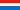
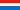

La Mine de Cuivre et le Musée Koffergrouf
Copper Mine Stolzembourg
Useful Information
| Location: |
5A rue Principale, 9463 Putscheid.
6 km from Vianden, northeast of Luxembourg. (49.9642570, 6.1677534) |
| Open: |
Easter to mid-JUL Sun, Hol 14. Mid-JUL to AUG daily 14. SEP to OCT Sun, Hol 14. [2022] |
| Fee: |
Adults EUR 9, Children (6-17) EUR 5. Lux Card: Adults EUR 6.30, Children (6-17) EUR 3.50. Groups: Adults EUR 4, Children (6-13) EUR 3. [2022] |
| Classification: |
 Copper mine Copper mine
|
| Light: |
 Incandescent Incandescent
|
| Dimension: | |
| Guided tours: |
Min=10, Max=20, MinAge=6.


 

|
| Photography: | |
| Accessibility: | |
| Bibliography: |
Simon Philippo, Isabelle Hoffmann, Alain Faber, Guy Heinen, Jos Schoellen, Nico Schroeder, Blom Luc, Steve Bornain (2007):
La minéralisation en cuivre de Stolzembourg
Ferrantia • 49 / 2007
pdf
|
| Address: |
La Mine de Cuivre et le Musée Koffergrouf, 5a, rue Principale, 9463 Stolzembourg, Tel: +352-26-95-05-66.
E-mail: |
| As far as we know this information was accurate when it was published (see years in brackets), but may have changed since then. Please check rates and details directly with the companies in question if you need more recent info. |
|
History
| 17th century | first mining in the area. |
| 27-JUL-1749 | first mining concession granted to Count Franz Everhard by the Austrian government. |
| 1755 | mine closed due to a lack of technical and financial resources. |
| 1764 | Thillman Meyer buys the concession and agrees to pay a mining tax to the State. |
| 1768 | Antoine Pescatore continues the exploitation. |
| 1825 | mine again closed. |
| 19th century | after the independence of Luxembourg the mine had its heyday. |
| 1854 | Société des Mines de Stolzembourg founded. |
| 1864 | mine flooded. |
| 1876 | mine collapsed. |
| 1938 | Neu & Stauder bought the operating rights and rebuilt the infrastructure. |
| 1939 | closed due to outbreak of World War II. |
| 1944 | all mining infrastucture destroyed, mining ends. |
| 2000 | restored by the Service des Sites et Monuments Nationaux Luxembourgeois. |
| 2005 | show mine opened to the public. |
Description
Located in the Ourtal (Our valley) near the village Stolzembourg, four locations connected with the former Koffergrouf (copper mine) are open for the public. The Musée Koffergrouf or Musée des Mines shows minerals, ores and mining equipment, the geology and the mining history is explained. At the mine starts a geologic trail named Mir ginn op d'Grouf (We go to the mine), which leads to the old mine on the path which was once used by the miners on their way to work. Ten plates with explanations introduce into various topics of the mining history and geology. The topics are the slate of Stolzembourg, Our valley, „Klangbaach“ valley, slate mining, Ösling forest, water in the mine, the copper mine, minerals, and ore mining.
The third highlight are the salg heaps of the mine. Although the ore was removed, the remains still contain minerals and small pieces of ore. It is fun for children and parents to collect some souvenirs. And now the fourth and most interesting part of the tour starts, the underground mine. All visitors are equipped with helmet, gum boots and plastic coat and then the mine is entered in groups of 15. The visitors enter gallery No. 3 through an old adit. The mine is well developed with electric light and stairs.
The visit of this copper mine is more or less a half day experience. Museum and geologic trail take about three hours, mine and mineral collecting too. It is best to reserve the whole afternoon for this mine.
Since 1986 the National museum of Natural History of Luxembourg works on the mine. In 1999, they designed the mineral exhibit of the Koffergrouf museum. In 2003, Steve Bornain wrote his PhD thesis on this mine. They also designed the geological path «Mir gin op d’ Grouf».
The mine had its heyday in the 19th century after the independence of Luxembourg. Before it was mined for two centuries by numerous owners without great success. One of the biggest problems was the high amount of water in the mine. In 1854 the industrialist Joseph Francotte and the Société Civile Godin David & Co founded the Société des Mines de Stolzembourg. This company obtained the right to exploit all the metal mines of the municipalities of Vianden, Pütscheid, Hosingen, Bastendorf and Fouhren. They sunk a new shaft and hired 30 miners to extract the new veins of copper. But it was necessary to dig a 400 m long adit to drain the sites. This was not sufficient and the mine was flooded again in 1864 and finally collapsed partly in 1876. As a result the mine passed into the hands of the Bleichroeder bank.
They sold it after World War I, and in 1938 it was bought by the company Neu & Stauder, who built a modern headquarters equipped with a headframe, an electrical substation and a yard. They also discovered better quality veins. But the promising start was stopped by the outbreak of the Second World War. During the Rundstedt offensive the mining infrastructure was almost completely destroyed which put an end to the copper mining.
 Search DuckDuckGo for "La Mine de Cuivre et le Musée Koffergrouf"
Search DuckDuckGo for "La Mine de Cuivre et le Musée Koffergrouf" Google Earth Placemark
Google Earth Placemark The copper mine, official website (visited: 12-MAY-2022)
The copper mine, official website (visited: 12-MAY-2022) Index
Index Topics
Topics Hierarchical
Hierarchical Countries
Countries Maps
Maps